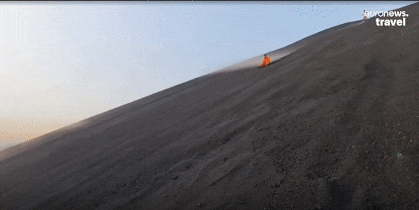
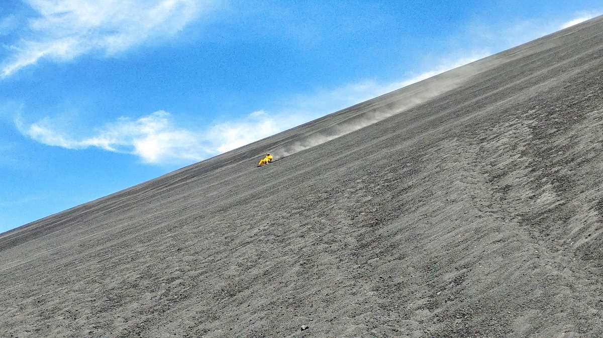
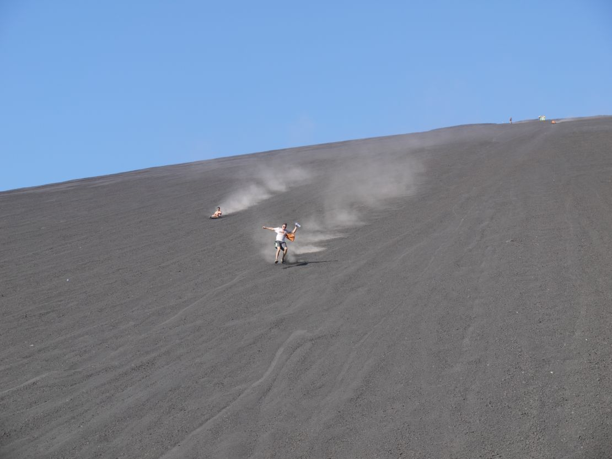

Before sliding down the volcano, the instructor gives a short explanation and demonstration on how to use the board, how to stop and how to go faster if you want to. He also explains that if you’re going too fast and can’t stop, you should use your feet to slow down in case of an emergency, because if you try to use your hands, they’ll end up completely damaged. Additionally, the instructor asks if you want videos or photos, and if the answer is yes, he positions himself halfway down the slope to capture a good shot. Once you’re actually surfing down the volcano, at first you feel fear, because halfway through the path there’s a drop where you can’t see what’s ahead. The board, especially during the rainy season, picks up a lot of speed, making you slide faster and faster. It’s possible for someone to go flying off the board because of the speed, but thanks to the protective suits, you won’t get seriously injured, though it will definitely hurt.
  